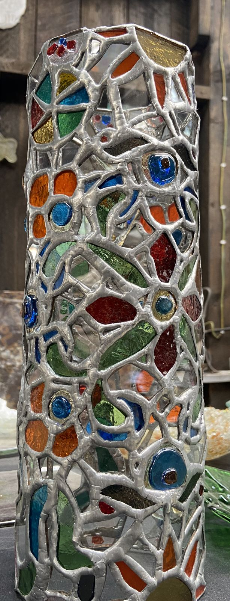

Business & Growth
Understanding how a business creates, captures and retains value, then identifying opportunities to improve its growth.
Business & Growth · Data & Insights · Strategy & Systems · Communication
I like taking problems that are messy, disconnected or difficult to see clearly, breaking them down, finding the useful signal, and turning that into something practical.
My background spans business growth, digital communication, creative production and data analysis. I am particularly interested in how better information, better systems and better decisions can create sustainable growth.
Understanding how a business creates, captures and retains value, then identifying opportunities to improve its growth.
Turning raw information into something people can actually use to understand a business and make decisions.
Looking beyond the immediate problem to understand the systems, processes and decisions underneath it.
Using visual communication to make ideas understandable, credible and useful.
From founder-dependent operations to a more systematic growth engine
Nakshi Glass is an artisan business built around craftsmanship, relationships and a premium creative identity. The challenge was not simply "how do we market more?" It was understanding how the business could grow without becoming increasingly dependent on the founder's memory, personal relationships and day-to-day involvement.
Customer information, pricing logic, demand generation and business development were not yet operating as a connected system. The opportunity was to introduce more structure without stripping away what makes the business valuable in the first place.

Craft: the part the system has to protect Premium creative identityThe goal is not to turn an artisan business into a machine. It is to build enough structure around the craft that the business can grow without losing its identity.
Connecting brand communication with commercial activity
At Sandstorm, I worked across marketing and brand communication for a luxury fashion and textile business.
The work sat between creative production and commercial activity. I created and managed digital content, developed campaign assets, supported events and factory experiences, worked with influencers and partnerships, and coordinated with the sales team on B2B activity.
Customer engagement increased by 54% during my time working on the brand's digital communication. More importantly, the experience pushed me to think beyond producing content and toward the commercial questions underneath it: who are we trying to reach, why would they care, what happens after they engage, and how does communication contribute to an actual business outcome?
Creative communication inside a financial services business
I joined Cytonn through the Brand department as a videography and photography intern and progressed into an assistant role. The work required translating financial products, campaigns and corporate initiatives into visual communication that people could understand quickly.
Daily campaign artwork, photography and videography, video editing, financial product communication, podcast and interview production, internal and external brand content, creative support for Cytonn Wallet and CMMF, and mentoring media interns. I also worked around performance-oriented financial products where communication had to remain clear while dealing with concepts that could be difficult for a general audience to understand.
Creative work becomes more valuable when it is connected to the thing the organization is actually trying to achieve. That experience is part of what eventually pushed my interests toward business, data and strategy.
I tend to start with the problem rather than the deliverable.
What is actually happening?
Where is the constraint, gap or opportunity?
What information, people, processes or ideas need to come together?
What practical solution can address it?
What happened, what changed, and what should happen next?
I don't see these as rigid steps. They are a way of making complicated problems easier to work with.
I am developing my analytical toolkit to complement my background in communication, marketing and business. The goal isn't to become someone who only produces dashboards. It is to become better at asking what is happening, why it is happening, what the evidence suggests we should investigate next, and what decision this information could improve.
| Excel | Analysis, modelling and reporting |
|---|---|
| SQL / MySQL | Working with relational data and extracting useful information |
| Power BI | Dashboards, reporting and data visualisation |
| AI-assisted analysis | Accelerating exploration, interpretation and hypothesis generation, with the reasoning kept grounded in the data |
How an idea changes when it moves from someone's head into the real world.
Before I became interested in business systems and data, I was trained to think visually. My background in film and media taught me to pay attention to how people perceive information, how stories are constructed, and how an idea changes when it moves from someone's head into the real world.
I still use that way of thinking. The difference is that I am increasingly interested in what sits behind the communication: what are we trying to change, who are we trying to reach, what evidence do we have, and what happens after the message lands?
Not everything I work on starts as a client project. Some things start as questions. Some become experiments. Others are simply ideas I want to understand better.
How can small businesses build systems without becoming bureaucratic?
What can public datasets tell us about a market, organisation or community?
How do infrastructure, agriculture, markets and communities interact?
What becomes possible when AI is treated as a local tool rather than just a chatbot?
What happens when visual storytelling is used to explain complex systems?
I started in film and media. That meant learning how to observe, communicate, create and tell stories.
Then I moved into marketing, where the questions became more commercial: who is the audience, what do they respond to, how does attention become engagement — and eventually, how does engagement become value? That led further into business development, strategy and data.
Today, I am interested in the space between these disciplines. I like understanding how a business, organisation or project actually works, identifying where things are getting stuck, and finding ways to connect the right information, people and systems.
I am particularly interested in problems around growth, development, markets, infrastructure, agriculture, natural resources, climate and emerging opportunities across Africa.
I don't think every problem needs the same tool. Sometimes it needs better data. Sometimes it needs a better process. Sometimes it needs a commercial conversation. Sometimes it needs a clearer story. And sometimes the real solution is connecting several of those things. That's the kind of work I want to keep getting better at.
Working with small businesses and organisations on growth, business systems, digital presence, data and strategy.
Marketing, digital communication, customer engagement, creative production, partnerships and B2B sales support.
Creative production, photography, videography, financial communication and brand support.
Film production, visual communication, creative direction and media.